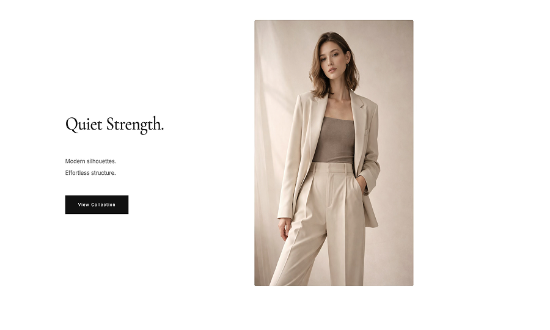

your style
Web制作 | LP・小規模サイトを丁寧に対応
デザイン意図をくみ取ったコーディング
About
デザインカンプを元にしたコーディングや、架空案件を想定したWebサイト制作を行っています。
HTML / CSSを中心に、シンプルで分かりやすいWebサイト制作を行っています。
初めてWeb制作を依頼する方にも安心していただけるよう、
丁寧な設計とコミュニケーションを大切にしています。
LP制作や小規模なコーポレートサイトを中心に、
デザインの意図をくみ取ったコーディングと、
スマートフォン対応（レスポンシブ）まで一貫して対応可能です。
ご相談段階から柔軟に対応いたしますので、お気軽にご相談ください。
Concept
トレンドだけに流されず、
その人・そのお店が持つ
「らしさ」を大切にしたデザインを心がけています。
※ すべて架空案件ですが、実案件を想定して構成・コーディングしています。
Works
架空案件を想定したWebサイト制作の実績です。
コーポレートサイトやLPを中心に、
デザインの意図をくみ取ったコーディングと、
スマートフォン対応まで一貫して制作しています。
美容室サイト

架空の美容室を想定したコーポレートサイト。 落ち着いた雰囲気と清潔感を意識し、 初めて訪れる方が安心して来店できることを目的に設計しました。
HTML / CSS / Responsive
カフェサイト

架空のカフェを想定したWebサイト。 店内の雰囲気が直感的に伝わることを目的に、 写真を主役にした構成と、情報が自然に目に入るレイアウトで設計しました
HTML / CSS / Responsive
アパレルLP
架空のアパレルブランドを想定したLP。 ブランドの世界観を統一し、 商品の魅力が自然に伝わり購入につながることを目的に構成しました。
HTML / CSS / Responsive